Miedo a “afectar el crecimiento”
Surgen dudas sobre las cargas y el desarrollo. Por eso el método parte de la evidencia, la técnica y la supervisión de un profesional habilitado.
MÉTODO BASE · PARA PROFESORES Y ENTRENADORES
El paso a paso para planificar y adaptar el entrenamiento de fuerza de niños y adolescentes de 6 a 17 años, con criterios de seguridad, progresiones claras y fundamentos para orientar a padres y colegios.
FUERZA
INFANTILMÉTODO BASE
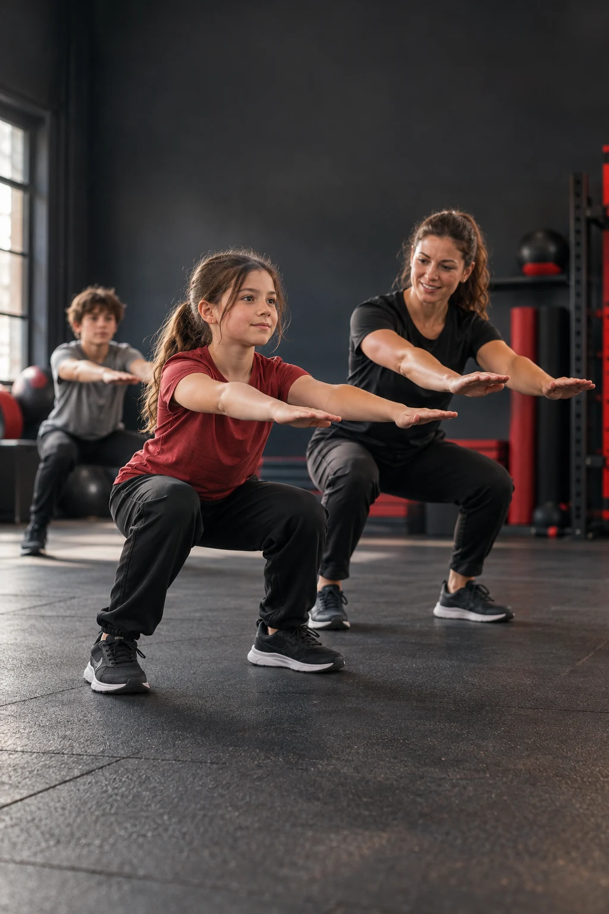
Primero una buena base. Después, el siguiente paso.
Planificar una sesión para un alumno de 8, 12 o 16 años puede generar dudas. Necesitas criterios claros para adaptar el entrenamiento a su desarrollo, experiencia y habilidades, con supervisión profesional.
Surgen dudas sobre las cargas y el desarrollo. Por eso el método parte de la evidencia, la técnica y la supervisión de un profesional habilitado.
Adaptar no es solo bajar el peso de una rutina de adultos. Hay que considerar la experiencia, la habilidad, la maduración y la respuesta individual.
Explicar el propósito de la sesión también es parte del trabajo. La guía incluye fundamentos para orientar a familias y colegios, con alcances y límites claros.
UNA IDEA QUE CAMBIA EL ENFOQUE
No necesitas hacer la sesión más difícil. Necesitas hacer que el siguiente paso tenga sentido para ese niño.
EL MECANISMO DE LA GUÍA
Coordinación en la iniciación, aprendizaje técnico y sesiones para adolescentes, con fundamentos de evidencia y seguridad presentes en todo el recorrido.
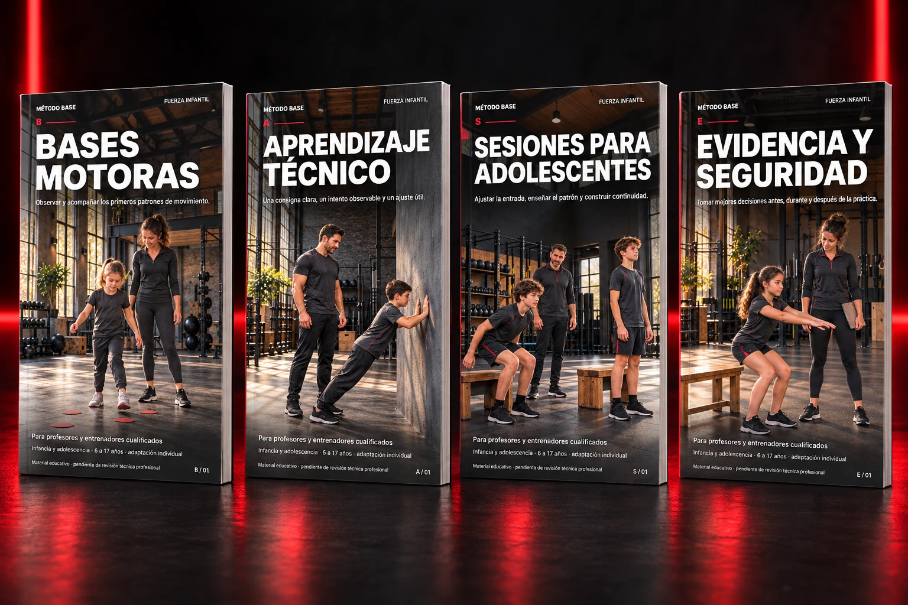
01 / B · BASES MOTORAS
En la iniciación, el foco está en ampliar el repertorio de movimiento, aprender a seguir indicaciones y disfrutar la práctica. El punto de partida se observa en cada niño.
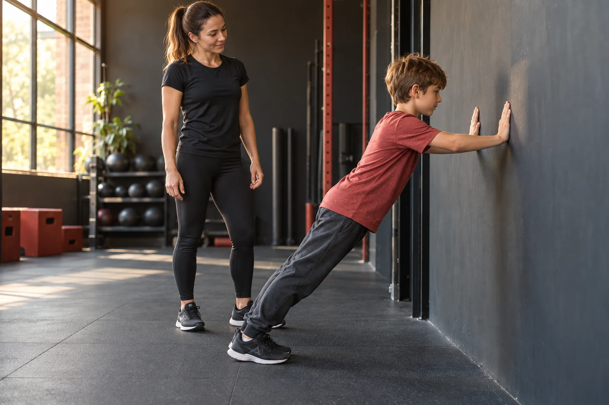
COORDINACIÓN Y APRENDIZAJE MOTOR02 / A · APRENDIZAJE TÉCNICO
Antes de la pubertad y al aprender nuevas tareas, la técnica guía la progresión. La dificultad se adapta al dominio del movimiento, la experiencia y la maduración.
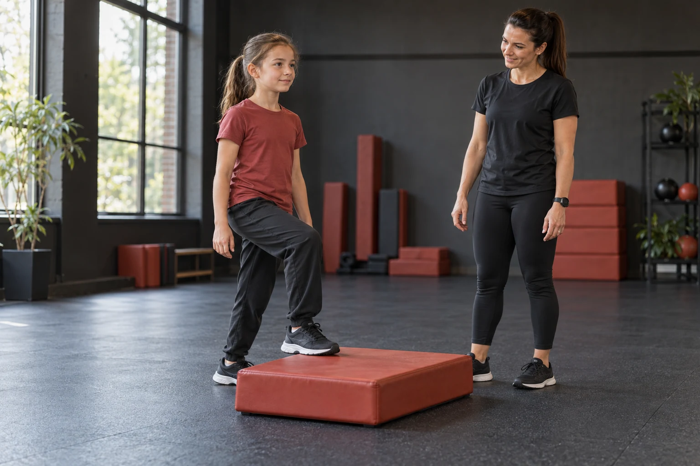
PRIMERO EL DOMINIO DEL MOVIMIENTO03 / S · SESIONES PARA ADOLESCENTES
Acompaña los objetivos del adolescente respetando su maduración y experiencia. La guía aborda el desarrollo físico junto con una conversación realista sobre el cuerpo y los resultados.
Cada etapa.
Su proceso.
04 / E · EVIDENCIA Y SEGURIDAD
La base transversal para tomar decisiones y explicarlas a familias y colegios. Considera el contexto, los límites de la evidencia y el alcance de cada profesional.
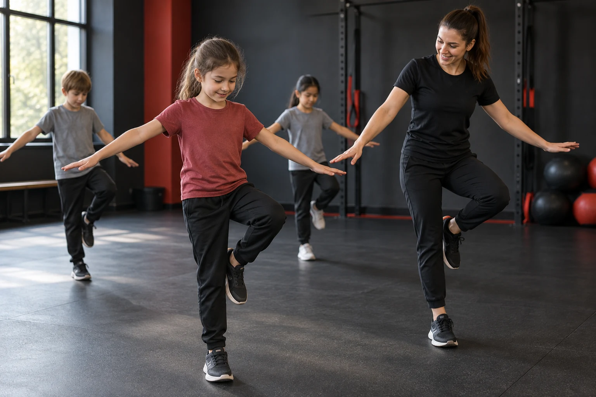
UNA BASE COMÚN PARA TODAS LAS ETAPAS¿Qué hace único a BASE? Organiza las bases motoras, el aprendizaje técnico y las sesiones para adolescentes sobre una base transversal de evidencia y seguridad. Las etapas orientan el contenido; no asignan una rutina universal por edad. BASE es un marco educativo y no cuenta con estudios de validación propios.
PÁGINAS REALES DEL MÉTODO BASE
Ejercicios ilustrados paso a paso, sesiones y fichas listas para consultar. Una selección de páginas reales para conocer el contenido de las guías.
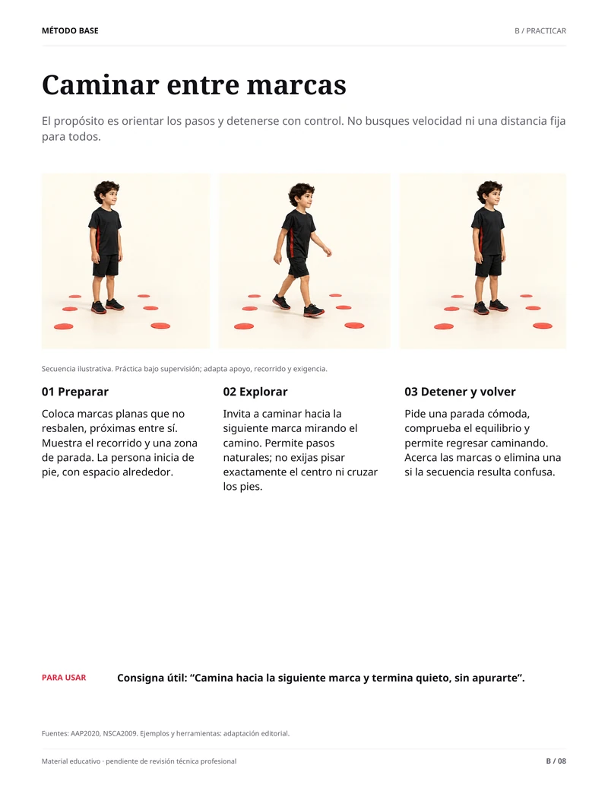
Caminar entre marcasTres momentos para explorar coordinación, control y equilibrio.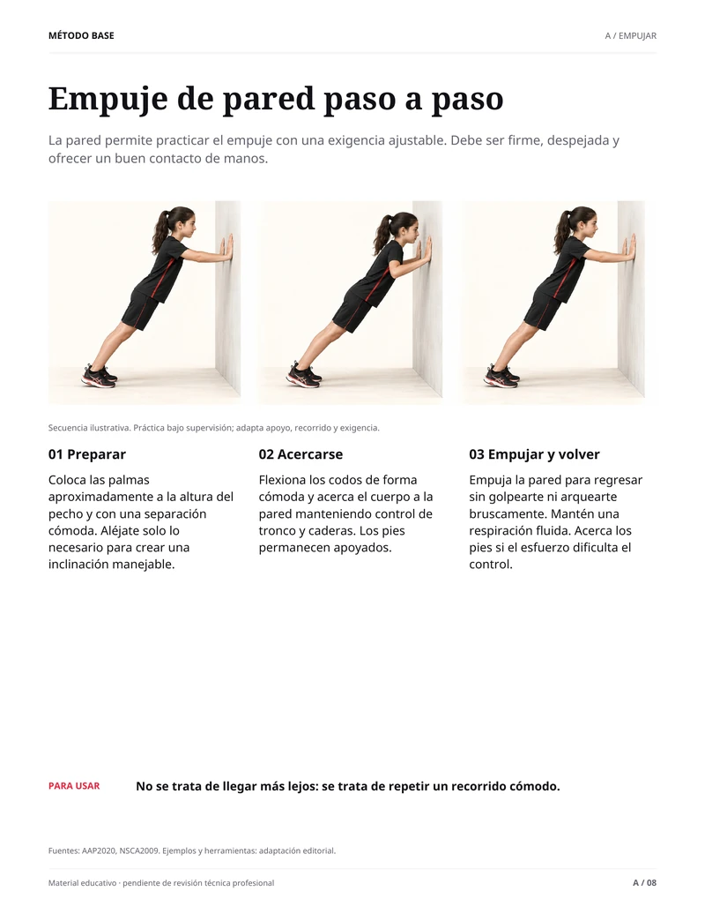
Empuje de pared paso a pasoPreparar, acercarse y empujar con indicaciones claras.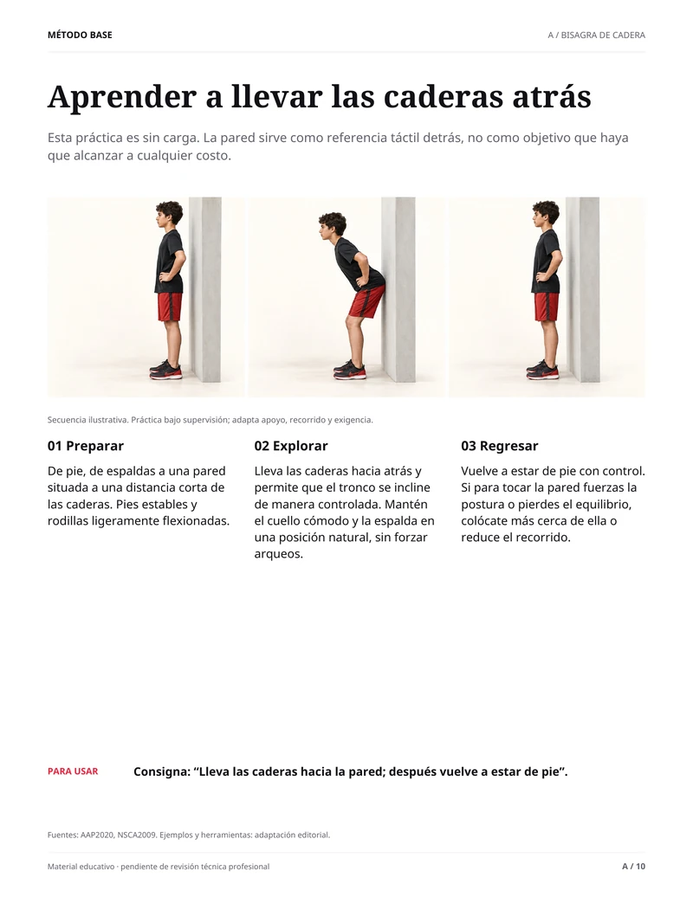
Aprender a llevar las caderas atrásUna secuencia sin carga para enseñar la bisagra de cadera.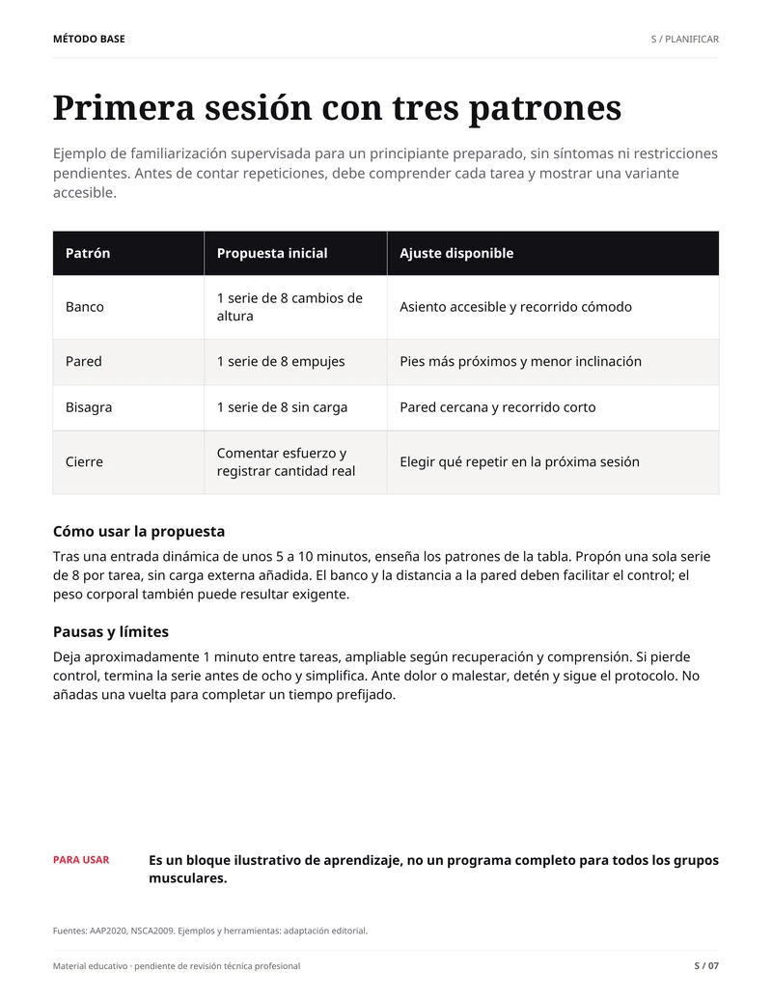
Primera sesión con tres patronesUna tabla con variantes, cantidades, pausas y ajustes.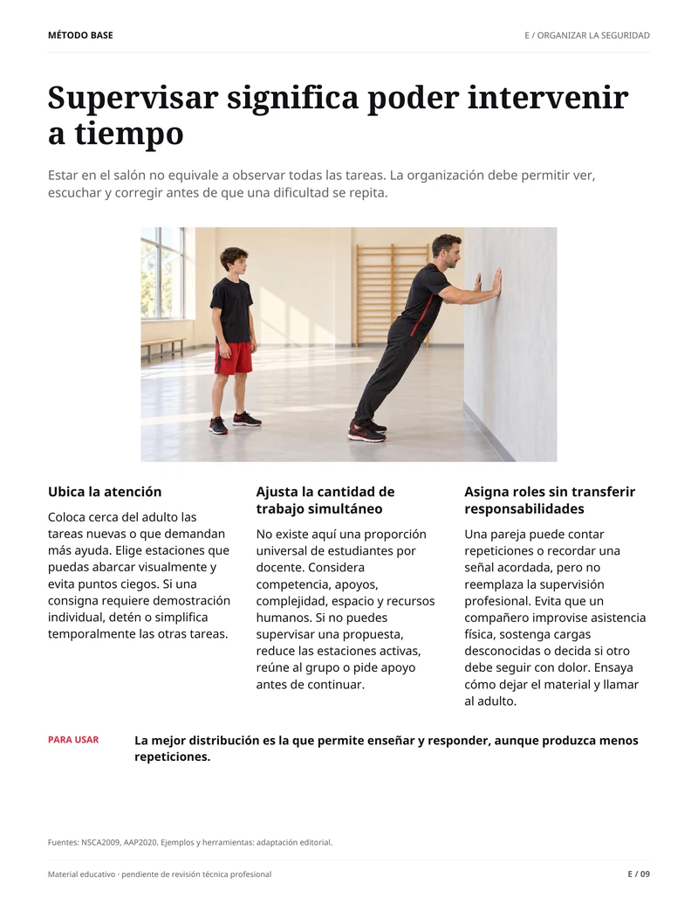
Supervisar significa poder intervenir a tiempoOrganizar el espacio y el grupo para poder observar y actuar.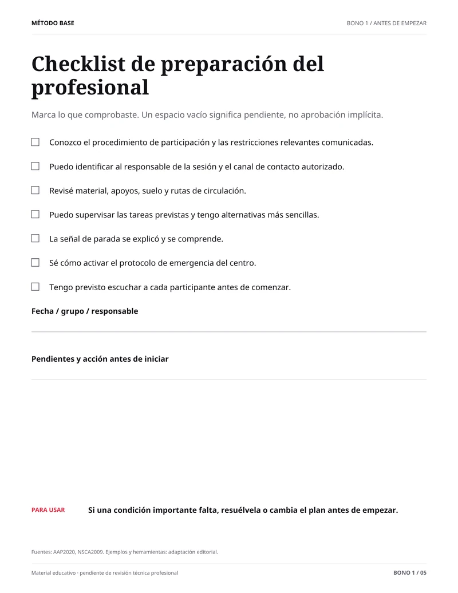
Checklist de preparación del profesionalUna ficha práctica para revisar lo necesario antes de empezar.Seis páginas reales de las guías y sus recursos prácticos.
DOS BONOS INCLUIDOS
Dos recursos prácticos para acompañar el Método BASE.
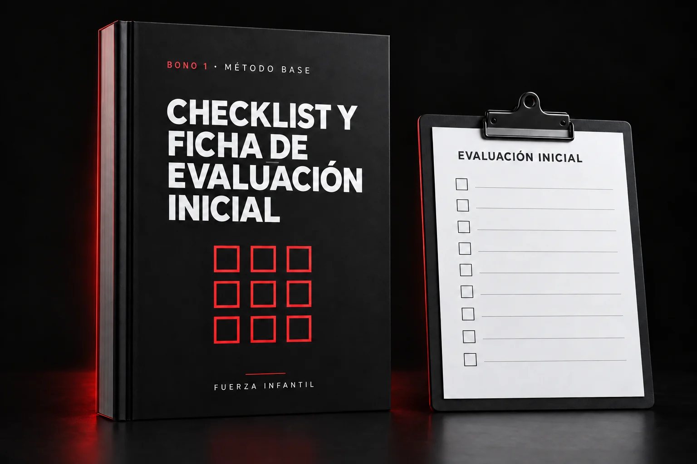
OBSERVAR ANTES DE EMPEZAR
Un apoyo para ordenar qué observar y qué información considerar antes de planificar una sesión.
EXPLICAR CON CLARIDAD
Un recurso para explicar el propósito del entrenamiento, la adaptación individual y los límites del material.
EL PAQUETE COMPLETO
Método BASE · De 6 a 17 años · Adaptación individual
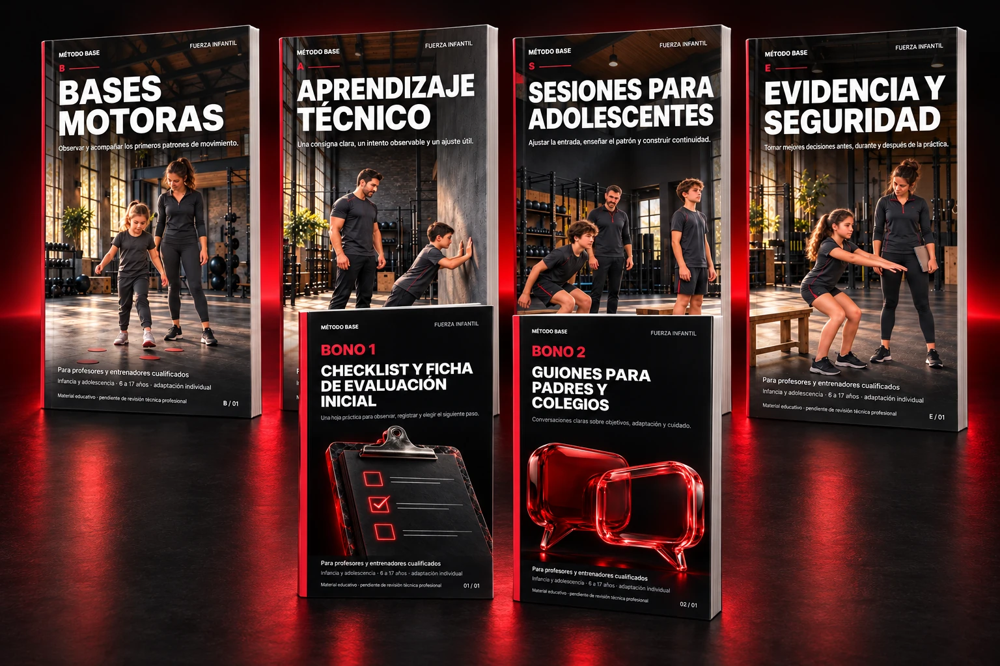
| Componentes incluidos | Valor estimado |
|---|---|
| LA GUÍAGuía completa de fuerza infantilLos cuatro bloques del Método BASE, incluidos los fundamentos y la seguridad. | US$29.00 |
| BONO 1Checklist y ficha de evaluación inicialPlantillas prácticas complementarias para organizar la observación y la supervisión. | US$12.00 |
| BONO 2Guiones para conversar con padres y colegiosUn recurso complementario para una comunicación informada y con límites claros. | US$9.00 |
| Actualizaciones futuras del materialAlcance por confirmar. No se incluyen en esta valoración. | Por confirmar |
| Valor total estimado | US$50.00 |
| Hoy por apenasGuía + dos bonos · Un solo pago | US$11,99 |
Pago seguro
ANTES DE EMPEZAR
El criterio profesional siempre acompaña a la información.
Para profesores de educación física, entrenadores y estudiantes del área que acompañan a niños principiantes. No está centrada en un deporte específico. La aplicación debe respetar las competencias profesionales y la normativa local.
El enfoque no asigna una misma rutina a todos los niños de una edad. Considera experiencia, habilidad, comprensión, maduración y contexto. La edad es un dato más, no una receta.
Bases motoras, Aprendizaje técnico, Sesiones para adolescentes y Evidencia y seguridad. Es el marco educativo con el que se organiza esta guía. Las etapas orientan el contenido y se adaptan al desarrollo y nivel de cada alumno. No es un protocolo clínico, no cuenta con validación científica propia ni está avalado por la AAP.
No se puede garantizar. En esta guía, la disciplina se trabaja como práctica de rutinas, seguimiento de indicaciones y respeto de turnos dentro de la sesión, sin castigos. Los hallazgos de atención a una tarea en adolescentes no equivalen a demostrar cambios generales de conducta en todos los niños.
No. Es un recurso educativo y no reemplaza una evaluación, la supervisión ni el juicio de un profesional habilitado. Tampoco ofrece garantías de seguridad o de resultados. Ante dolor, lesiones o condiciones de salud, corresponde consultar al profesional de salud adecuado.
Los botones de compra de la oferta y del final de esta página abren el checkout de Hotmart. El precio presentado aquí es de US$11.99, en un solo pago. Revisa el importe final y las condiciones en Hotmart antes de confirmar.
Sí. La sección de muestras incluye seis páginas reales de las guías: ejercicios ilustrados, una sesión, criterios de supervisión y un checklist. Las muestras se presentan como imágenes pequeñas dentro de esta página.
La guía no incluye certificado. Revisa las condiciones de entrega, soporte y cualquier política comercial en el checkout de Hotmart antes de confirmar la compra.
EL SIGUIENTE PASO EMPIEZA AQUÍ
Acompaña su fuerza. Invita al movimiento.
Construye oportunidades para practicar la constancia.